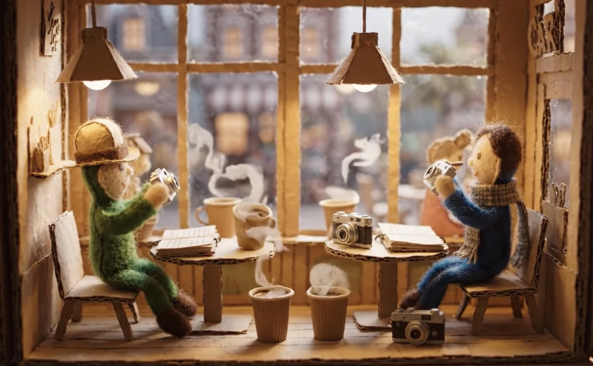

민준은 매일 같은 카페에서 그녀를 봤다. 수아. 늘 창가 자리, 늘 아메리카노, 늘 노란색 노트 한 권. 삼 개월 동안 한 마디도 못 걸었다.
[Minjun saw her every day at the same café. Sooah. Always the window seat, always an Americano, always a yellow notebook. For three months he hadn’t managed a single word.]
오늘은 달랐다. 그녀가 먼저 다가왔다.
“저... 혹시 오늘 저녁에 시간 있으세요?”
민준의 심장이 무너질 것 같았다. 운명이라고 생각했다.
[Today was different. She approached him first.
“Um... do you happen to have time this evening?”
Minjun felt his heart was about to collapse. He thought it was fate.]
저녁은 완벽했다. 와인, 촛불, 그녀의 웃음소리. 민준은 평생 이런 행복을 느껴본 적이 없었다.
“우리 집에 갈래요?” 수아가 조용히 물었다.
민준은 고개를 끄덕였다. 너무 빨랐지만, 사랑이 원래 그런 거라고 자신을 설득했다.
[Dinner was perfect. Wine, candles, the sound of her laughter. Minjun had never felt this kind of happiness in his life.
“Want to come to my place?” Sooah asked quietly.
Minjun nodded. It was too fast, but he convinced himself love was supposed to be like this.]
수아의 아파트는 깔끔했다. 벽 한 면을 가득 채운 사진들만 빼면.
민준은 가까이 다가갔다. 그리고 그대로 얼어붙었다.
모든 사진이 그였다. 카페에서. 길거리에서. 자기 집 창문 너머에서. 심지어 잠자는 모습까지.
“삼 개월 동안 기다렸어요.” 수아가 뒤에서 속삭였다. “당신이 먼저 말 걸어주길요.”
[Sooah’s apartment was tidy. Except for one wall completely covered in photos.
Minjun stepped closer. And froze on the spot.
Every photo was of him. At the café. On the street. From beyond his own window. Even him sleeping.
“I waited three months,” Sooah whispered behind him. “For you to speak to me first.”]
민준은 천천히 돌아섰다. 손이 떨렸다. 도망쳐야 했다. 경찰을 불러야 했다.
대신, 그는 자기 가방을 열었다.
[Minjun slowly turned around. His hands were shaking. He should run. He should call the police.
Instead, he opened his bag.]
작은 노란색 노트 한 권. 수아의 것과 똑같은. 그리고 사진 수백 장. 카페에서. 길거리에서. 그녀의 창문 너머에서.
[A small yellow notebook. Identical to Sooah’s. And hundreds of photos. At the café. On the street. From beyond her window.]
수아의 눈이 커졌다. 그러더니 웃기 시작했다. 처음에는 작게, 그러다가 크게.
“당신도?”
“삼 개월이요.” 민준이 말했다. “매일.”
[Sooah’s eyes widened. Then she began to laugh. Quietly at first, then loudly.
“You too?”
“Three months,” Minjun said. “Every day.”]
두 사람은 소파에 앉아 서로의 노트를 비교했다. 같은 날짜, 같은 시간, 가끔은 같은 장소에서 서로를 모르고 사진을 찍고 있었다.
“우리, 진짜 운명인가 봐요.” 수아가 말했다.
“아니면, 둘 다 정신병자거나.”
“그게 같은 거 아니에요?”
[The two sat on the sofa and compared each other’s notebooks. Same dates, same times, sometimes the same places, taking photos of each other without knowing.
“We really must be fate,” Sooah said.
“Or, we’re both insane.”
“Aren’t those the same thing?”]
민준이 그녀에게 키스했다. 노란색 노트 두 권이 바닥에 떨어졌다. 페이지가 펄럭이며 같은 얼굴들을 드러냈다.
그날 밤, 두 스토커는 서로의 품 안에서 처음으로 평화롭게 잠들었다.
누구를 감시할 필요가 없었으니까.
[Minjun kissed her. The two yellow notebooks fell to the floor. The pages fluttered, revealing the same faces.
That night, the two stalkers fell peacefully asleep in each other’s arms for the first time.
Because there was no one left to watch.]